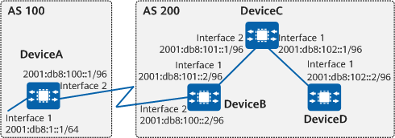

Example for Configuring a BGP4+ RR
Networking Requirements
As shown in Figure 1, DeviceB receives an EBGP Update message and sends it to DeviceC. DeviceC is configured as an RR and has two clients: DeviceB and DeviceD.
DeviceB and DeviceD do not need to establish an IBGP connection. After receiving an Update message from DeviceB, DeviceC reflects it to DeviceD. Similarly, after receiving an Update message from DeviceD, DeviceC reflects it to DeviceB.

In this example, interface 1 and interface 2 represent 10GE0/0/1 and 10GE0/0/2, respectively.

To complete the configuration, you need the following data:
Precautions
Note the following during the configuration:
- To improve security, you are advised to deploy BGP4+ security measures. For details, see "Configuring BGP4+ Authentication." Keychain authentication is used as an example. For details, see Example for Configuring Keychain Authentication for BGP4+.
Procedure
- Assign an IPv6 address to each involved interface. For detailed configurations, see Configuration Scripts.
- Configure basic BGP4+ functions.
# Configure DeviceA.
[DeviceA] bgp 100 [DeviceA-bgp] router-id 1.1.1.1 [DeviceA-bgp] peer 2001:db8:100::2 as-number 200 [DeviceA-bgp] ipv6-family unicast [DeviceA-bgp-af-ipv6] peer 2001:db8:100::2 enable [DeviceA-bgp-af-ipv6] network 2001:db8:1:: 64 [DeviceA-bgp-af-ipv6] quit [DeviceA-bgp] quit
# Configure DeviceB.
[DeviceB] bgp 200 [DeviceB-bgp] router-id 2.2.2.2 [DeviceB-bgp] peer 2001:db8:100::1 as-number 100 [DeviceB-bgp] peer 2001:db8:101::1 as-number 200 [DeviceB-bgp] ipv6-family unicast [DeviceB-bgp-af-ipv6] peer 2001:db8:100::1 enable [DeviceB-bgp-af-ipv6] peer 2001:db8:101::1 enable [DeviceB-bgp-af-ipv6] peer 2001:db8:101::1 next-hop-local [DeviceB-bgp-af-ipv6] quit [DeviceB-bgp] quit
# Configure DeviceC.
[DeviceC] bgp 200 [DeviceC-bgp] router-id 3.3.3.3 [DeviceC-bgp] peer 2001:db8:101::2 as-number 200 [DeviceC-bgp] peer 2001:db8:102::2 as-number 200 [DeviceC-bgp] ipv6-family unicast [DeviceC-bgp-af-ipv6] peer 2001:db8:101::2 enable [DeviceC-bgp-af-ipv6] peer 2001:db8:102::2 enable [DeviceC-bgp-af-ipv6] network 2001:db8:101:: 96 [DeviceC-bgp-af-ipv6] network 2001:db8:102:: 96 [DeviceC-bgp-af-ipv6] quit [DeviceC-bgp] quit
# Configure DeviceD.
[DeviceD] bgp 200 [DeviceD-bgp] router-id 4.4.4.4 [DeviceD-bgp] peer 2001:db8:102::1 as-number 200 [DeviceD-bgp] ipv6-family unicast [DeviceD-bgp-af-ipv6] peer 2001:db8:102::1 enable [DeviceD-bgp-af-ipv6] quit [DeviceD-bgp] quit
- Configure an RR.
# Configure DeviceC as an RR, with DeviceB and DeviceD as its clients.
[DeviceC] bgp 200 [DeviceC-bgp] ipv6-family unicast [DeviceC-bgp-af-ipv6] peer 2001:db8:101::2 reflect-client [DeviceC-bgp-af-ipv6] peer 2001:db8:102::2 reflect-client [DeviceC-bgp-af-ipv6] quit [DeviceC-bgp] quit
Verifying the Configuration
# Check the BGP4+ routing table of DeviceB.
[DeviceB] display bgp ipv6 routing-table BGP Local router ID is 2.2.2.2 Status codes: * - valid, > - best, d - damped, x - best external, a - add path, h - history, i - internal, s - suppressed, S - Stale Origin : i - IGP, e - EGP, ? - incomplete RPKI validation codes: V - valid, I - invalid, N - not-found Total Number of Routes: 3 *> Network : 2001:DB8:1:: PrefixLen : 64 NextHop : 2001:DB8:100::1 LocPrf : MED : 0 PrefVal : 0 Label : Path/Ogn : 100i i Network : 2001:DB8:101:: PrefixLen : 96 NextHop : 2001:DB8:101::1 LocPrf : 100 MED : 0 PrefVal : 0 Label : Path/Ogn : i *>i Network : 2001:DB8:102:: PrefixLen : 96 NextHop : 2001:DB8:101::1 LocPrf : 100 MED : 0 PrefVal : 0 Label : Path/Ogn : i
# Check the BGP4+ routing table of DeviceD.
[DeviceD] display bgp ipv6 routing-table BGP Local router ID is 4.4.4.4 Status codes: * - valid, > - best, d - damped, x - best external, a - add path, h - history, i - internal, s - suppressed, S - Stale Origin : i - IGP, e - EGP, ? - incomplete RPKI validation codes: V - valid, I - invalid, N - not-found Total Number of Routes: 3 *>i Network : 2001:DB8:1:: PrefixLen : 64 NextHop : 2001:DB8:101::2 LocPrf : 100 MED : 0 PrefVal : 0 Label : Path/Ogn : 100i *>i Network : 2001:DB8:101:: PrefixLen : 96 NextHop : 2001:DB8:102::1 LocPrf : 100 MED : 0 PrefVal : 0 Label : Path/Ogn : i i Network : 2001:DB8:102:: PrefixLen : 96 NextHop : 2001:DB8:102::1 LocPrf : 100 MED : 0 PrefVal : 0 Label : Path/Ogn : i
The preceding command output shows that DeviceD has learned from DeviceC the BGP4+ route advertised by DeviceA.
Configuration Scripts
-
# sysname DeviceA # interface 10GE0/0/1 ipv6 enable ipv6 address 2001:DB8:1::1/64 # interface 10GE0/0/2 ipv6 enable ipv6 address 2001:DB8:100::1/96 # bgp 100 router-id 1.1.1.1 peer 2001:DB8:100::2 as-number 200 # ipv4-family unicast # ipv6-family unicast network 2001:DB8:1:: 64 peer 2001:DB8:100::2 enable # return
-
# sysname DeviceB # interface 10GE0/0/1 ipv6 enable ipv6 address 2001:DB8:101::2/96 # interface 10GE0/0/2 ipv6 enable ipv6 address 2001:DB8:100::2/96 # bgp 200 router-id 2.2.2.2 peer 2001:DB8:100::1 as-number 100 peer 2001:DB8:101::1 as-number 200 # ipv4-family unicast # ipv6-family unicast peer 2001:DB8:100::1 enable peer 2001:DB8:101::1 enable peer 2001:DB8:101::1 next-hop-local # return
-
# sysname DeviceC # interface 10GE0/0/1 ipv6 enable ipv6 address 2001:DB8:102::1/96 # interface 10GE0/0/2 ipv6 enable ipv6 address 2001:DB8:101::1/96 # bgp 200 router-id 3.3.3.3 peer 2001:DB8:101::2 as-number 200 peer 2001:DB8:102::2 as-number 200 # ipv4-family unicast # ipv6-family unicast network 2001:DB8:101:: 96 network 2001:DB8:102:: 96 peer 2001:DB8:101::2 enable peer 2001:DB8:101::2 reflect-client peer 2001:DB8:102::2 enable peer 2001:DB8:102::2 reflect-client # return
-
# sysname DeviceD # interface 10GE0/0/1 ipv6 enable ipv6 address 2001:DB8:102::2/96 # bgp 200 router-id 4.4.4.4 peer 2001:DB8:102::1 as-number 200 # ipv4-family unicast # ipv6-family unicast peer 2001:DB8:102::1 enable # return